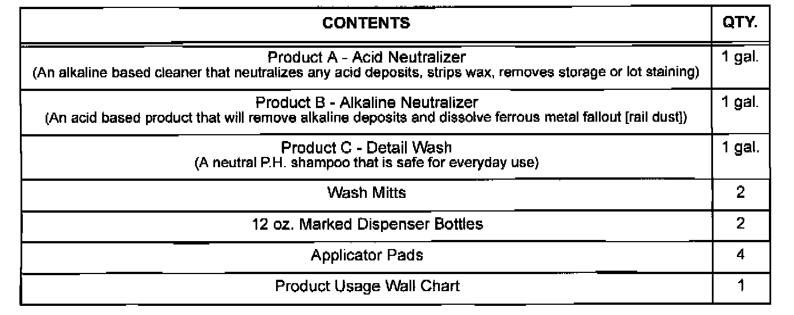
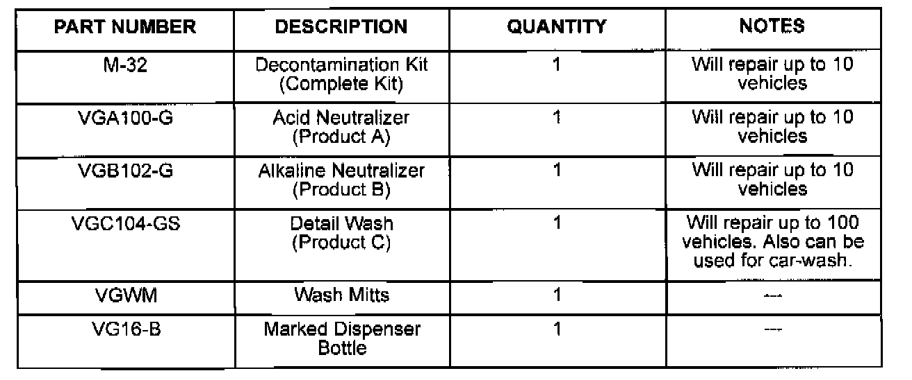
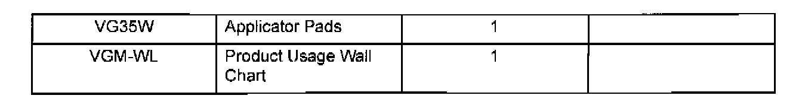

Paint - Iron Particle/Industrial Fallout Damage: Overview
Bulletin No.: 012/99Issued: 08/23/99
Revised:
Section:
09
Applicable Model/s
See Below
Subject
PAINT DAMAGE - IRON PARTICLES / INDUSTRIAL
FALLOUT / ACID RAIN
APPLICABLE MODEL(S)/VINS
1995-99 Millenia, 626, Protege, Miata, MPV, B-Series.
1995-97 MX-6.
1995 929, RX-7, MX-3.
DESCRIPTION
Paint may be damaged by hot iron particles (dust) that are generated by manufacturing facilities, rail shipment, etc. and mechanically bond to a vehicle's painted surfaces. These particles combined with moisture and temperature create an acid which causes the iron to corrode and damage (enter) the paint surface.
Paint may also be damaged by industrial fallout and acid rain. These conditions generate corrosive compounds that fall on the vehicle's painted surfaces. When combined with moisture and temperature, chemical compounds are created that damage (etch) the paint surface.
To remove these contaminates, a Decontamination kit is available which will repair these concerns. This kit includes the following items which will repair up to ten (10) vehicles:

DECONTAMINATION KIT # M-32
Customers having this concern should have their vehicle repaired using the above kit and the following procedure.
Note
^ This repair information supersedes the applicable information located in the PAINT DAMAGE REPAIR GUIDE (9999-95-044N-94).
^ No polishing, compounding, color sanding, or repainting should be done before this procedure is performed. This procedure uses products that are acidic, alkaline, and neutral and must be properly mixed and used in their specific order.
^ Any changes to this procedure will cause an incomplete or unsatisfactory repair. The use of other products or procedures may cause damage to aluminum or painted surfaces.
^ The products used to remove surface contamination from paint are designed for vehicles which have experienced exposure for less than 120 days. Vehicles that exceed 120 days of exposure may require the procedure be repeated to resolve the concern. Once the procedure is completed, it may be necessary to perform polishing or refinishing procedures after vehicle inspection.
PART(S) INFORMATION
To order Decontamination kit and replacement materials as listed below, call Automotive International (800) 543-7156 8:30 AM - 5:00 PM (EST).
Note
^ Dealer should initially order the Decontamination kit. After using the Decontamination kit, additional materials may be ordered.


^ Part numbers listed are not Mazda part numbers. Parts must be ordered from Automotive International.
WARRANTY INFORMATION
Any paint damage caused by iron particles, industrial fallout, or acid rain may not covered by warranty. If you have questions, contact your DCSM.